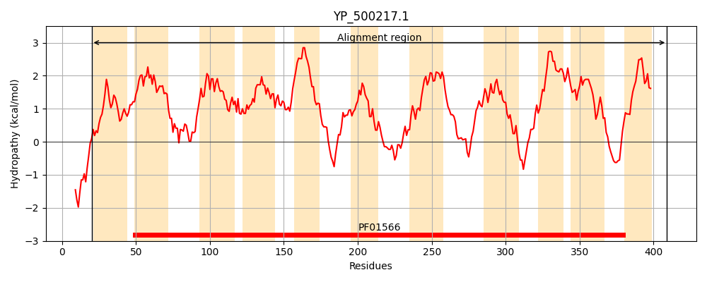
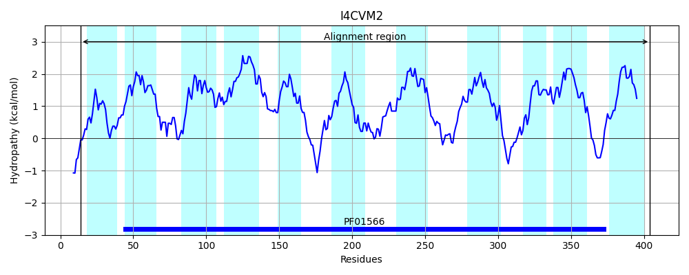
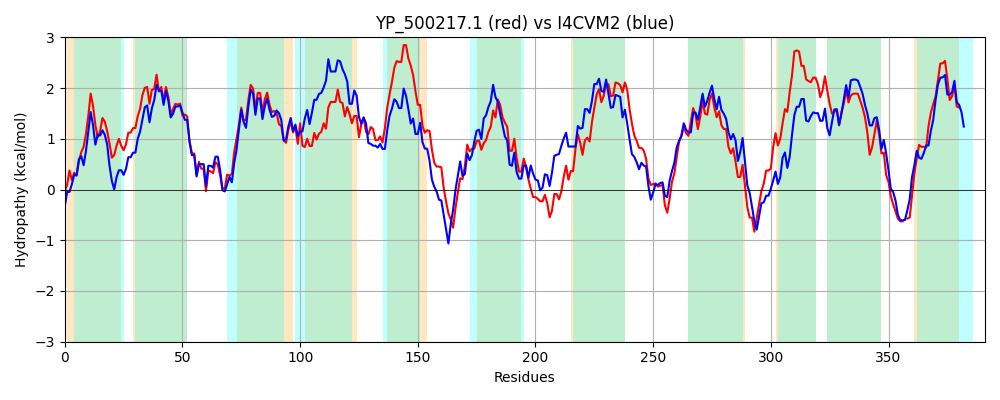

Hit Accession: I4CVM2
Hit TCID: 2.A.55.3.5
Hit Description: gnl|BL_ORD_ID|5327 gnl|TC-DB|I4CVM2|2.A.55.3.5 Branched chain amino acids transporter OS=Pseudomonas stutzeri CCUG 29243 GN=A458_14500 PE=4 SV=1
Mach Len: 391
e:0.000000
Query TMS Count : 11
Hit TMS Count: 11
TMS-Overlap Score: 11.350000
Predicted Substrates:None
BLAST Alignment:
Score: 1100 , Bit scores: 428 bits, E-value: 4.3e-149, Alignment length: 391, Percentage identity: 51
Query: 20 KRLLLGSVFLMATSAIGPAFLTQTAVFTSQFFASFAFAILLSIIIDIGAQINIWRILVVTGLRGQEISNKVVPGLGTVISILIAFGGLAFNIGNIAGAGLGLNAIFGLDVKWGAAITAIFAILIFVSKSGQKIMDVVSMILGIVMILVVAYVMFVSNPPYGDAFVHTFAPEHPMKLVLPIITLVGGTVGGYITFAGAHRILDSGIKGKQYLPFVNQSAIAGILTTGIMRTLLFLAVLGVVVTGVTLSSENPPASVFEHAIGPIGKNIFGIVLFAAAMSSVIGSAYTSATFLKTLHKSLNERSNLIVIVFIVISTMIFLFIGKPISLLIIAGAINGWILPITLGAILIASKKKSIVGD-YKHPNWMFIFGIVAVLVTILTGIFSFKEVLQLF 409
+ +L G++F+MATS+IGPAFLTQT++FT ++ ASFAFAIL+S++IDIGAQ+NIWR+++V LRGQ+++N+V+PG+G +IS I GG+AFNIGNI GAGL +N IFG+ G+ I A+ I IF+ ++ + +MD V +LG+VM+ ++ Y M SNPP +A +F P+ P+ L+LPI+TLVGGTVGGYI+F+G HR++++GI G + + V ++A+ GI TTG++R LFLA LGVV G+TL NP ASVF H++G IG IFG+VL AA++SSVIG+AYTS TF+ +LH + + +VI FI ST+I+ +G+P+ +L++AG +N +LP+ LG IL+AS+K +IVGD Y+HP WM +FGI+A+L T + + SF +L+ +
Sbjct: 14 RNVLRGAIFIMATSSIGPAFLTQTSLFTEKYLASFAFAILISLLIDIGAQLNIWRVIIVANLRGQDVANRVIPGVGHLISAFIVLGGIAFNIGNIGGAGLAMNVIFGVPPIIGSLIAAVLIIGIFLLRNAKGVMDSVMQVLGLVMLCMIGYAMLQSNPPLLEAMSRSFNPDDPLILLLPIVTLVGGTVGGYISFSGGHRLVEAGITGVENVRLVTRAAVIGIATTGVVRICLFLAALGVVSQGLTLDPSNPAASVFSHSMGTIGYKIFGVVLLAASVSSVIGAAYTSVTFMYSLHDCIRRHNQRVVIAFIACSTLIYGLVGQPVKVLVVAGTLNALVLPLALGCILLASRKTNIVGDAYRHPTWMLMFGILAMLATAVGVVMSFNALLEFW 404 | Protein Hydropathy Plots: |
|---|
|  |  |
Pairwise Alignment-Hydropathy Plot:
|
|---|
|  |